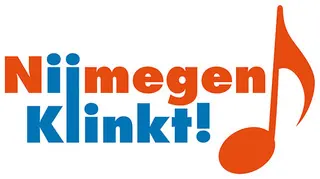

Nieuws ·
Nijmegen Klinkt @ Stevenskerk: Een Podium voor Lokaal Talent in de Historische Zuiderkapel

Nijmegen, een stad bekend om zijn rijke culturele erfgoed, kondigt met trots het startsein aan voor een opwindend nieuw muzikaal initiatief: “Nijmegen Klinkt @ Stevenskerk”. Deze serie concerten, die elke vierde zaterdag van de maand plaatsvindt, begint op 24 februari in de prachtig gerestaureerde Zuiderkapel van de Stevenskerk. Dit initiatief biedt een stijlvol podium voor het beste talent uit Nijmegen, variërend van amateurs tot jonge professionals.
Een Start met Betekenis
De aftrap op 24 februari valt samen met de herdenkingsweek van het bombardement op Nijmegen. Deze memorabele avond wordt geopend door Charles van Doornewaard en Hubert Hendriks, die een uniek programma ten gehore brengen. Hun repertoire bestaat uit ‘goede en foute’ songs, liederen met een verborgen betekenis, en muziekstukken die een significante rol speelden tijdens de oorlog.
Een Podium voor Divers Talent
“Nijmegen Klinkt @ Stevenskerk” is niet alleen een podium voor gevestigde artiesten, maar ook voor musici en ensembles die eerder deelnamen aan het jaarlijkse evenement “Nijmegen Klinkt”. Buiten het festival kunnen zij zich nu door het jaar heen presenteren met aantrekkelijke programma’s in de Zuiderkapel. Deze programma’s zijn te vinden op www.nijmegenklinkt.nl en www.stevenskerk.nl/agenda.
Ontmoet de Artiesten
Naast het genieten van de optredens, biedt dit project een unieke kans om de artiesten persoonlijk te ontmoeten in de Droom in de Noorderkapel. Bezoekers kunnen daar na het optreden nagenieten onder het genot van een hapje en een drankje, terwijl ze de muzikale ervaringen en indrukken delen.
Een Samenwerking die Verbindt
Dit initiatief is het resultaat van een samenwerking tussen “Nijmegen Klinkt” en de Stevenskerk. Het doel is om op een speciale manier een verbinding voor en naar de stad Nijmegen te zijn. Er is ook een mogelijkheid voor een interview met Theo Andriessen en Hubert Hendriks over deze unieke samenwerking.
“Nijmegen Klinkt @ Stevenskerk” belooft een reeks van inspirerende en diverse optredens te worden, die de rijke muzikale cultuur van Nijmegen viert. We nodigen iedereen uit om deze muzikale reis in de sfeervolle Zuiderkapel van de Stevenskerk te ervaren. Dit is uw kans om deel te nemen aan een unieke culturele beleving die het lokale talent in de schijnwerpers zet.